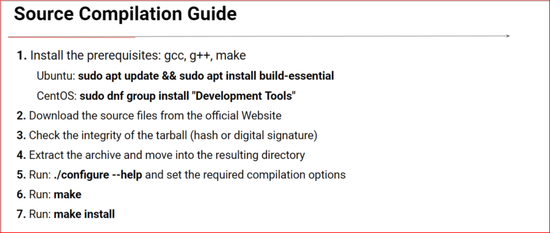
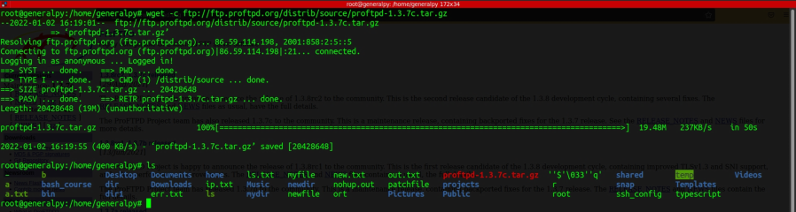
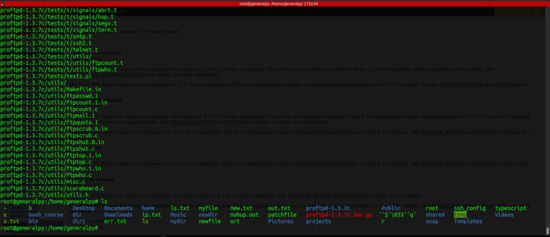
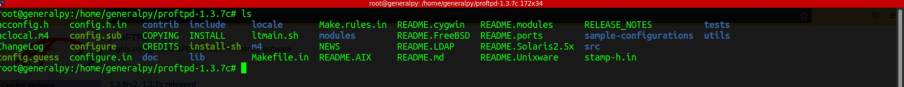
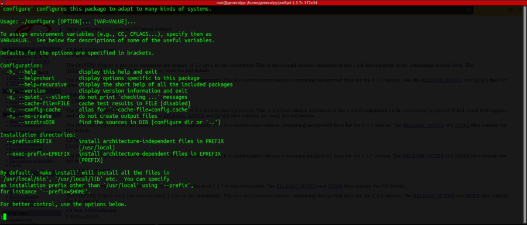
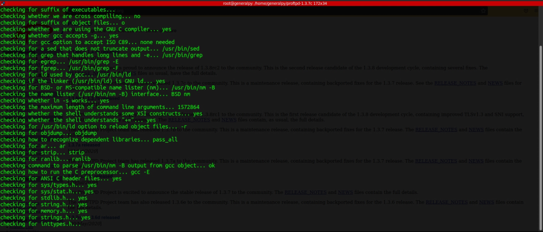
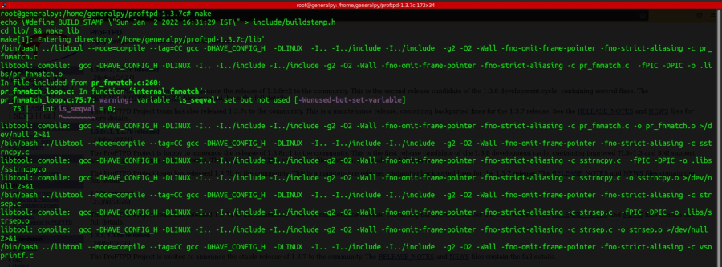
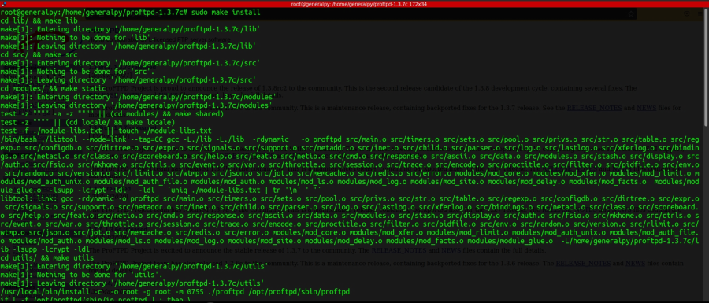
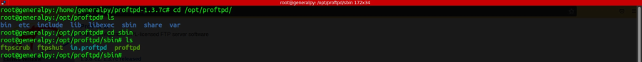

Compiling ProFTPD from source - Practice
ProFTP is a very famous FTP server which is used in unix like os.
First step of compiling from source is to download the tarball of the package.

Once downloaded we will now extract the archive.


src directory contains source code for our package.
One step which is optional is to check hash of tarball before extracting.
After extracting we will use configure executable file to know all available options. configure will check all dependencies, report errors if some dependencies are unmet, and we can also specify extra options with configure which are available. configure will then create MakeFile.
Make is a program which is used to automate compilation process. It will compile multiple source files automatically. To use make, we have to use a special file called MakeFile which holds instructions required for compilation.

Configure --help output with less. Here --prefix option is recommended to use everytime we build our own packages. --prefix will specify where to install our files, if not specified, packages will be automatically installed at default location /usr/local/ in this case which can sometimes cause problems. There also many program specific options available.
Now we will invoke configure with our required flags(here we will only use prefix). Do not proceed until all errors encountered by configure are fixed. It is advised to install applications inside /opt/ directory.

Output of configure.
After configure finishes, use make command to compile source code.
Fix any errors if occured.

After make finishes use command sudo make install. make install will move compiled code to /opt/proftpd(our destination directory).

And we are done!!

Our binary is in sbin directory. To remove application, just delete this directory(/opt/proftpd).
We cannot run source build applications by systemctl(like other servers which are installed by apt). We have to run them manually each time and stop them by killing its process. We can create a script to automate this process.
We can compile in a single step by
./configure [options] && make && sudo make install
If error occurs in any command, next command will not run. Only run make install as admin.